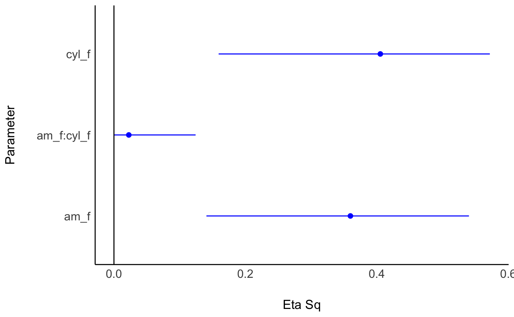

Functions to compute effect size measures for ANOVAs, such as Eta, Omega and
Epsilon squared, and Cohen's f (or their partialled versions) for aov,
aovlist and anova models. These indices represent an estimate of how much
variance in the response variables is accounted for by the explanatory
variable(s).
Effect sizes are computed using the sums of squares obtained from
anova(model) which might not always be appropriate (Yeah... ANOVAs are
hard...). It is suggested that ANOVA models be fit with afex package.
See details.
eta_squared( model, partial = TRUE, generalized = FALSE, ci = 0.9, verbose = TRUE, ... ) omega_squared(model, partial = TRUE, ci = 0.9, verbose = TRUE, ...) epsilon_squared(model, partial = TRUE, ci = 0.9, verbose = TRUE, ...) cohens_f( model, partial = TRUE, ci = 0.9, squared = FALSE, verbose = TRUE, model2 = NULL, ... ) cohens_f_squared( model, partial = TRUE, ci = 0.9, squared = TRUE, verbose = TRUE, model2 = NULL, ... ) eta_squared_posterior( model, partial = TRUE, generalized = FALSE, ss_function = stats::anova, draws = 500, verbose = TRUE, ... )
| model | A model, ANOVA object, or the result of |
|---|---|
| partial | If |
| generalized | If TRUE, returns generalized Eta Squared, assuming all
variables are manipulated. Can also be a character vector of observed
(non-manipulated) variables, in which case generalized Eta Squared is
calculated taking these observed variables into account. For |
| ci | Confidence Interval (CI) level |
| verbose | Toggle warnings and messages on or off. |
| ... | For Bayesian models, passed to |
| squared | Return Cohen's f or Cohen's f-squared? |
| model2 | Optional second model for Cohen's f (/squared). If specified, returns the effect size for R-squared-change between the two models. |
| ss_function | For Bayesian models, the function used to extract
sum-of-squares. Uses |
| draws | For Bayesian models, an integer indicating the number of draws from the posterior predictive distribution to return. Larger numbers take longer to run, but provide estimates that are more stable. |
A data frame with the effect size(s) and confidence interval(s).
For eta_squared_posterior(), a data frame containing the ppd of the Eta
squared for each fixed effect, which can then be passed to
bayestestR::describe_posterior() for summary stats.
A data frame containing the effect size values and their confidence intervals.
For aov and aovlist models, the effect sizes are computed directly with
Sums-of-Squares (for mlm / maov models, effect sizes are computed for
each response separately). For all other model, the model is passed to
anova(), and effect sizes are approximated via test statistic conversion
(see F_to_eta2() for more details.)
The sums of squares (or F statistics) used for the computation of the effect
sizes is based on those returned by anova(model) (whatever those may be -
for aov and aovlist these are type-1 sums of squares; for merMod
these are type-3 sums of squares). Make sure these are the sums of squares
you are interested in; You might want to pass the result of car::Anova(mode, type = 3), or use the afex package to fit ANOVA models.
It is generally recommended to fit models with contr.sum factor weights
and centered covariates, for sensible results. See examples and the afex
package.
Both Omega and Epsilon are unbiased estimators of the
population's Eta, which is especially important is small samples. But
which to choose?
Though Omega is the more popular choice (Albers \& Lakens, 2018), Epsilon is
analogous to adjusted R2 (Allen, 2017, p. 382), and has been found to be less
biased (Carroll & Nordholm, 1975).
Cohen's f can take on values between zero, when the population means are all
equal, and an indefinitely large number as standard deviation of means
increases relative to the average standard deviation within each group.
When comparing two models in a sequential regression analysis, Cohen's f for
R-square change is the ratio between ratio between the increase in R-square
and the \
Cohen has suggested that the values of 0.10, 0.25, and 0.40 represent small,
medium, and large effect sizes, respectively.
For Bayesian models (fit with brms or rstanarm),
eta_squared_posterior() simulates data from the posterior predictive
distribution (ppd) and for each simulation the Eta Squared is computed for
the model's fixed effects. This means that the returned values are the
population level effect size as implied by the posterior model (and not the
effect size in the sample data). See rstantools::posterior_predict() for
more info.
Confidence intervals are estimated using the Noncentrality parameter method;
These methods searches for a the best non-central parameters (ncps) of the
noncentral t-, F- or Chi-squared distribution for the desired
tail-probabilities, and then convert these ncps to the corresponding effect
sizes. (See full effectsize-CIs for more.)
For positive only effect sizes (Eta squared, Cramer's V, etc.; Effect sizes associated with Chi-squared and F distributions), special care should be taken when interpreting CIs with a lower bound equal to 0, and even more care should be taken when the upper bound is equal to 0 (Steiger, 2004; Morey et al., 2016). For example:
eta_squared(aov(mpg ~ factor(gear), mtcars[1:5, ])) #> Parameter | Eta2 | 90% CI #> ---------------------------------- #> factor(gear) | 0.33 | [0.00, 0.74]
Albers, C., \& Lakens, D. (2018). When power analyses based on pilot data are biased: Inaccurate effect size estimators and follow-up bias. Journal of experimental social psychology, 74, 187-195.
Allen, R. (2017). Statistics and Experimental Design for Psychologists: A Model Comparison Approach. World Scientific Publishing Company.
Carroll, R. M., & Nordholm, L. A. (1975). Sampling Characteristics of Kelley's epsilon and Hays' omega. Educational and Psychological Measurement, 35(3), 541-554.
Kelley, T. (1935) An unbiased correlation ratio measure. Proceedings of the National Academy of Sciences. 21(9). 554-559.
Olejnik, S., & Algina, J. (2003). Generalized eta and omega squared statistics: measures of effect size for some common research designs. Psychological methods, 8(4), 434.
Steiger, J. H. (2004). Beyond the F test: Effect size confidence intervals and tests of close fit in the analysis of variance and contrast analysis. Psychological Methods, 9, 164-182.
Other effect size indices:
cohens_d(),
effectsize(),
phi(),
standardize_parameters()
# \donttest{ library(effectsize) mtcars$am_f <- factor(mtcars$am) mtcars$cyl_f <- factor(mtcars$cyl) model <- aov(mpg ~ am_f * cyl_f, data = mtcars) eta_squared(model)#> Parameter | Eta2 (partial) | 90% CI #> ------------------------------------------ #> am_f | 0.63 | [0.42, 0.75] #> cyl_f | 0.66 | [0.45, 0.77] #> am_f:cyl_f | 0.10 | [0.00, 0.27]eta_squared(model, generalized = "cyl_f")#> Parameter | Eta2 (generalized) | 90% CI #> ---------------------------------------------- #> am_f | 0.36 | [0.13, 0.55] #> cyl_f | 0.63 | [0.42, 0.75] #> am_f:cyl_f | 0.04 | [0.00, 0.16]omega_squared(model)#> Parameter | Omega2 (partial) | 90% CI #> -------------------------------------------- #> am_f | 0.57 | [0.35, 0.71] #> cyl_f | 0.60 | [0.37, 0.72] #> am_f:cyl_f | 0.02 | [0.00, 0.13]epsilon_squared(model)#> Parameter | Epsilon2 (partial) | 90% CI #> ---------------------------------------------- #> am_f | 0.61 | [0.40, 0.74] #> cyl_f | 0.63 | [0.41, 0.75] #> am_f:cyl_f | 0.03 | [0.00, 0.06]cohens_f(model)#> Parameter | Cohen's f (partial) | 90% CI #> ----------------------------------------------- #> am_f | 1.30 | [0.86, 1.73] #> cyl_f | 1.38 | [0.90, 1.81] #> am_f:cyl_f | 0.33 | [0.00, 0.61](etas <- eta_squared(model, partial = FALSE))#> Parameter | Eta2 | 90% CI #> -------------------------------- #> am_f | 0.36 | [0.13, 0.55] #> cyl_f | 0.41 | [0.14, 0.58] #> am_f:cyl_f | 0.02 | [0.00, 0.13]model0 <- aov(mpg ~ am_f + cyl_f, data = mtcars) # no interaction cohens_f_squared(model0, model2 = model)#>#> Cohen's f2 (partial) | 90% CI | R2_delta #> ---------------------------------------------- #> 0.11 | [0.00, 0.37] | 0.02# Recommended: Type-3 effect sizes + effects coding # ------------------------------------------------- if (require(car, quietly = TRUE)) { contrasts(mtcars$am_f) <- contr.sum contrasts(mtcars$cyl_f) <- contr.sum model <- aov(mpg ~ am_f * cyl_f, data = mtcars) model_anova <- car::Anova(model, type = 3) eta_squared(model_anova) }#> Parameter | Eta2 (partial) | 90% CI #> ------------------------------------------ #> am_f | 0.11 | [0.00, 0.32] #> cyl_f | 0.63 | [0.42, 0.75] #> am_f:cyl_f | 0.10 | [0.00, 0.27]# afex takes care of both type-3 effects and effects coding: if (require(afex)) { data(obk.long, package = "afex") model <- aov_car(value ~ treatment * gender + Error(id / (phase)), data = obk.long, observed = "gender" ) eta_squared(model) epsilon_squared(model) omega_squared(model) eta_squared(model, partial = FALSE) epsilon_squared(model, partial = FALSE) omega_squared(model, partial = FALSE) eta_squared(model, generalized = TRUE) # observed vars are pulled from the afex model. }#> Warning: More than one observation per cell, aggregating the data using mean (i.e, fun_aggregate = mean)!#>#> Parameter | Eta2 (generalized) | 90% CI #> ---------------------------------------------------------- #> treatment | 0.25 | [0.00, 0.53] #> gender | 0.16 | [0.00, 0.48] #> treatment:gender | 0.24 | [0.00, 0.52] #> phase | 0.20 | [0.00, 0.41] #> treatment:phase | 0.13 | [0.00, 0.26] #> gender:phase | 4.25e-03 | [0.00, 0.00] #> treatment:gender:phase | 0.02 | [0.00, 0.00]## Approx. effect sizes for mixed models ## ------------------------------------- if (require(lmerTest, quietly = TRUE)) { model <- lmer(mpg ~ am_f * cyl_f + (1 | vs), data = mtcars) omega_squared(model) }#>#> Parameter | Omega2 (partial) | 90% CI #> -------------------------------------------- #> am_f | 0.07 | [0.00, 0.27] #> cyl_f | 0.60 | [0.36, 0.72] #> am_f:cyl_f | 0.03 | [0.00, 0.14]## Bayesian Models (PPD) ## --------------------- if (FALSE) { if (require(rstanarm) && require(bayestestR) && require(car)) { fit_bayes <- stan_glm(mpg ~ factor(cyl) * wt + qsec, data = mtcars, family = gaussian(), refresh = 0 ) es <- eta_squared_posterior(fit_bayes, ss_function = car::Anova, type = 3 ) bayestestR::describe_posterior(es) # compare to: fit_freq <- lm(mpg ~ factor(cyl) * wt + qsec, data = mtcars ) aov_table <- car::Anova(fit_freq, type = 3) eta_squared(aov_table) } } # }